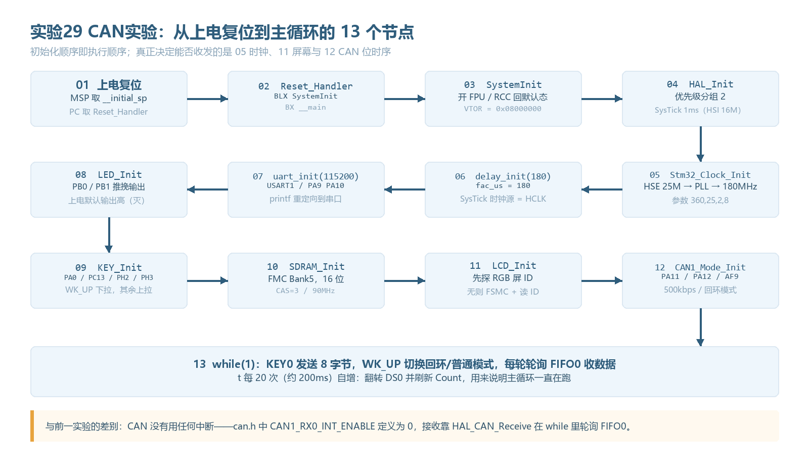
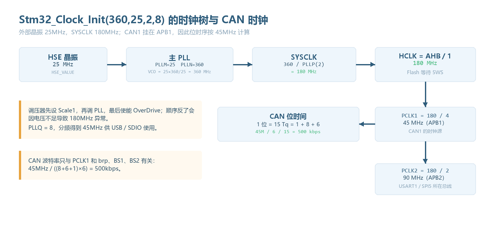
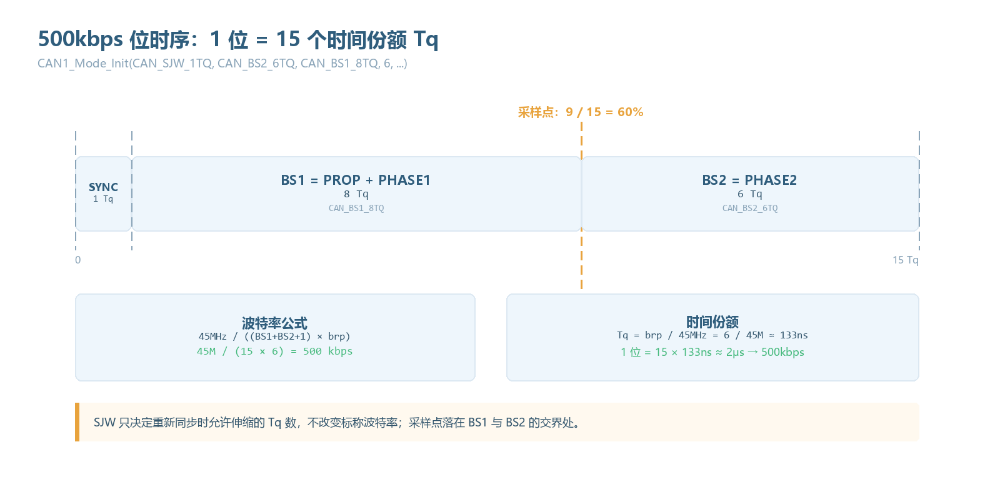
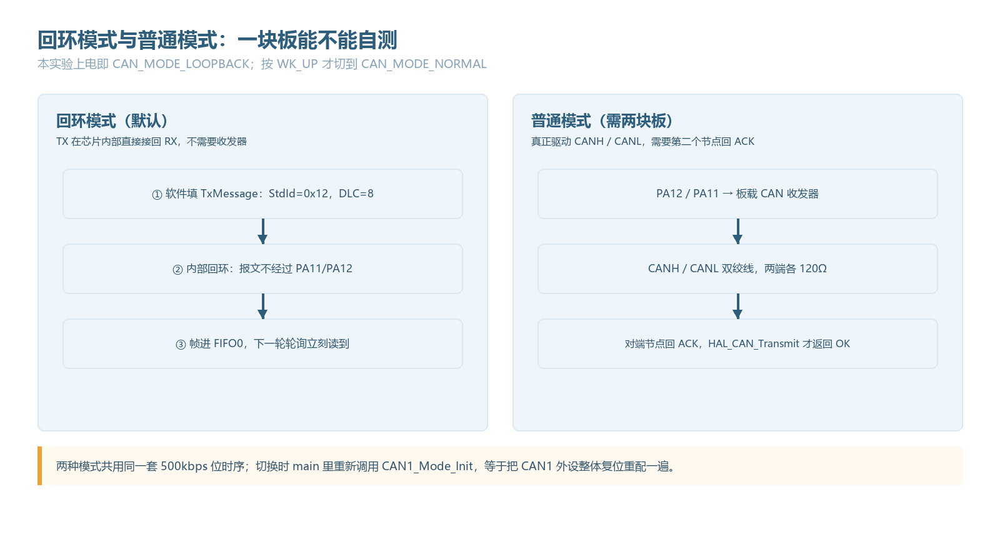
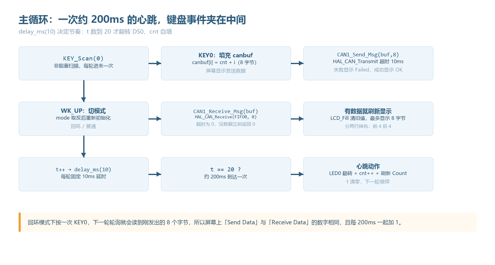

01 实验目标与硬件资源
CAN 与串口、485 最大的差别在于位时序是显式配置出来的：同一套 45MHz 的 APB1 时钟，靠 brp、BS1、BS2 三个参数切出 500kbps。本实验上电先用 CAN_MODE_LOOPBACK，发送的帧在芯片内部直接回到接收端，因此按下 KEY0 就能在屏幕上下两行看到同一组数字；按 WK_UP 切到普通模式后，必须有两块板（或一个 CAN 调试节点）互相回 ACK 才能发送成功。
| 资源 | 引脚 / 参数 | 关键配置 | 源码证据 |
|---|---|---|---|
| CAN1 | PA11=RX、PA12=TX | AF9、复用推挽、上拉、高速 | HARDWARE/CAN/can.c · HAL_CAN_MspInit |
| 位时序 | 500kbps | SJW=1TQ、BS1=8TQ、BS2=6TQ、brp=6 | main.c · CAN1_Mode_Init 调用 |
| 工作模式 | 回环 / 普通 | 上电回环，WK_UP 切换后重新初始化 | main.c 的 mode |
| 滤波器 | 过滤器 0 | 32 位掩码模式，ID 与 MASK 全 0，挂 FIFO0 | CAN1_FilerConf |
| 发送 | 标准帧 0x12 | 数据帧、DLC 最大 8、超时 10ms | CAN1_Send_Msg |
| 接收 | 轮询 FIFO0 | CAN1_RX0_INT_ENABLE = 0 | can.h |
| 按键 | KEY0 / WK_UP | KEY0 发送，WK_UP 切模式 | USER/main.c |
| 显示 / 调试 | LCD、USART1 115200 | Count、Send Data、Receive Data 三行 | main.c / usart.c |
TTCM、ABOM、AWUM 全部为 DISABLE，NART 为 ENABLE（禁止自动重传）。02 目录与文件分工
| 目录 / 文件 | 负责什么 | 本页看什么 |
|---|---|---|
CORE/startup_stm32f429xx.s | 栈堆、向量表、复位入口 | CAN1_RX0_IRQHandler 的向量位置（本实验未用到） |
USER/system_stm32f4xx.c | FPU、RCC 复位、VTOR | SystemInit |
USER/main.c | 初始化、发送缓冲、接收显示 | canbuf、cnt、mode |
USER/stm32f4xx_it.c | 异常入口 | 仍只有 SysTick_Handler |
HARDWARE/CAN/can.c | CAN1 初始化、滤波器、发送、查询接收 | CAN1_Mode_Init、HAL_CAN_MspInit |
HARDWARE/CAN/can.h | 中断开关、函数声明 | CAN1_RX0_INT_ENABLE |
SYSTEM/sys/sys.c | 180MHz 时钟树 | PCLK1 = 45MHz |
SYSTEM/delay/delay.c | 10ms 主循环节拍 | delay_ms(10) |
SYSTEM/usart/usart.c | USART1 调试口 | uart_init(115200) |
HARDWARE/LCD、SDRAM、KEY、LED | 显示与交互 | 只确认调用顺序 |
DCD CAN1_RX0_IRQHandler。本工程把 CAN1_RX0_INT_ENABLE 设为 0，因此 can.c 里那段中断服务函数被 #if 整段裁掉，向量最终指向启动文件的默认死循环。03 启动流程总览

把 main 里的调用顺序摊开看，CAN 初始化排在最后：HAL_Init → Stm32_Clock_Init → delay_init → uart_init → LED_Init → KEY_Init → SDRAM_Init → LCD_Init → CAN1_Mode_Init。这个顺序不是随意的：CAN 的位时序依赖已经稳定的 PCLK1，而 PCLK1 由 Stm32_Clock_Init 决定；如果先初始化 CAN 再改时钟，波特率就会与设定值不符。
CAN1_Mode_Init内部把brp换算成时间份额，而时间份额的基准是 APB1 时钟；此时 45MHz 必须已经建立。HAL_CAN_Init会调用HAL_CAN_MspInit，其中使能 CAN1 与 GPIOA 时钟并配置 PA11/PA12 复用，都是在时钟树稳定之后才有效。- LCD 初始化放在 CAN 之前，是为了让后续的发送/接收结果有地方显示；若屏幕未初始化就发帧，现象只能靠串口或分析仪观察。
04 启动文件与向量表
Stack_Size EQU 0x400; //1KB 栈 Heap_Size EQU 0x200; //512B 堆 DCD Reset_Handler ; Reset Handler DCD CAN1_RX0_IRQHandler ; CAN1 RX0 //弱定义，可被 can.c 覆盖 Reset_Handler PROC EXPORT Reset_Handler [WEAK] IMPORT SystemInit IMPORT __main LDR R0, =SystemInit BLX R0 //先跑 SystemInit LDR R0, =__main BX R0 //再进 C 库初始化，最终到 main ENDP
向量表的位置由 SystemInit 写入 SCB->VTOR = FLASH_BASE，因此中断能否进得去，取决于两件事：向量表偏移正确，以及外设的中断使能位真的被打开。
- 启动文件里
CAN1_RX0_IRQHandler只是一个[WEAK]符号，默认实现是死循环。 can.c中真正的服务函数被#if CAN1_RX0_INT_ENABLE包住，而该宏为 0，编译后不存在强符号。HAL_CAN_MspInit里使能CAN_IT_FMP0与 NVIC 的代码同样在这段条件编译内，所以 FIFO0 挂起中断从未打开。
05 SystemInit 与 HAL_Init
void SystemInit(void)
{
RCC->CR |= (uint32_t)0x00000001; //开 HSI
RCC->CFGR &= 0xF8FF0000; //复位 SW / HPRE / PPRE1 / PPRE2
RCC->CR &= 0xFEF6FFFF; //关 HSE / CSS / PLL
RCC->CR &= 0xFFFBFFFF; //关 PLLI2S
RCC->BDCR &= 0xFFFFFF80; //复位 RTC 时钟源
SCB->VTOR = FLASH_BASE; //向量表指向 0x08000000
}
HAL_StatusTypeDef HAL_Init(void)
{
HAL_NVIC_SetPriorityGrouping(NVIC_PRIORITYGROUP_2); //分组 2：2 位抢占 + 2 位子优先级
HAL_InitTick(TICK_INT_PRIORITY); //TICK_INT_PRIORITY = 0x0F
return HAL_OK;
}
本工程 HAL_Init 用的分组是 2，而不是很多例程里的分组 4。这一点在只使用 SysTick 时看不出差别，但一旦打开 CAN 这类外设中断，抢占与子优先级的可用位数就按分组 2 来算（抢占 0~3，子优先级 0~3）。
HAL_InitTick在 HSI 16MHz 时把重装值配成 16000，随后Stm32_Clock_Init把主频改到 180MHz，但并没有重配 SysTick。- 因此
HAL_Delay的实际延时约为设定值的 11 倍；而delay_us/delay_ms是轮询计数，fac_us = 180按新主频计算，仍然准确。 - 主循环里的
delay_ms(10)来自SYSTEM/delay，所以t==20的 200ms 节拍是可信的；CAN 发送超时用的是HAL_CAN_Transmit(..., 10)，走的是HAL_GetTick，两者不要混为一谈。
06 时钟树与 CAN 时钟

| 节点 | 算式 | 结果 | 与 CAN 的关系 |
|---|---|---|---|
| VCO | 25MHz × 360 / 25 | 360MHz | PLL 输入，与 CAN 无直接关系 |
| SYSCLK | 360 / PLLP(2) | 180MHz | 系统主频 |
| HCLK | 180 / AHB 分频 1 | 180MHz | Flash 需 5WS |
| PCLK1 | 180 / APB1 分频 4 | 45MHz | CAN1 的位时序基准 |
| PCLK2 | 180 / APB2 分频 2 | 90MHz | USART1、SPI5 所在总线 |
Stm32_Clock_Init(360,25,2,8); //VCO=360M, SYSCLK=180M, PCLK1=45M, PCLK2=90M delay_init(180); //fac_us 按 180MHz 计算 uart_init(115200); //USART1 调试口
- CAN 的时钟来自 APB1，而 APB1 分频是 4，所以 180MHz 变 45MHz，这一步不能记错。
- 若把主频改成 168MHz 而 APB1 仍分频 4（42MHz），同样的
brp=6会得到 466kbps，与对端 500kbps 通信必然出错。 - 所以“改时钟”与“改波特率”必须成对出现；本工程两者都写死在
main的开头，属于固定配置。
07 CAN1 初始化与引脚
u8 CAN1_Mode_Init(u32 tsjw,u32 tbs2,u32 tbs1,u16 brp,u32 mode)
{
CAN_FilterConfTypeDef CAN1_FilerConf;
CAN1_Handler.Instance=CAN1;
CAN1_Handler.pTxMsg=&TxMessage; //发送消息缓冲
CAN1_Handler.pRxMsg=&RxMessage; //接收消息缓冲
CAN1_Handler.Init.Prescaler=brp; //分频值，写进 BTR 时减 1
CAN1_Handler.Init.Mode=mode; //回环 / 普通
CAN1_Handler.Init.SJW=tsjw;
CAN1_Handler.Init.BS1=tbs1;
CAN1_Handler.Init.BS2=tbs2;
CAN1_Handler.Init.TTCM=DISABLE; //非时间触发
CAN1_Handler.Init.ABOM=DISABLE; //不自动离线恢复
CAN1_Handler.Init.AWUM=DISABLE; //睡眠由软件唤醒
CAN1_Handler.Init.NART=ENABLE; //禁止报文自动重传
CAN1_Handler.Init.RFLM=DISABLE; //新报文覆盖旧报文
CAN1_Handler.Init.TXFP=DISABLE; //优先级由 ID 决定
if(HAL_CAN_Init(&CAN1_Handler)!=HAL_OK) return 1;
...
return 0;
}
void HAL_CAN_MspInit(CAN_HandleTypeDef* hcan)
{
GPIO_InitTypeDef GPIO_Initure;
__HAL_RCC_CAN1_CLK_ENABLE(); //CAN1 时钟
__HAL_RCC_GPIOA_CLK_ENABLE(); //GPIOA 时钟
GPIO_Initure.Pin=GPIO_PIN_11|GPIO_PIN_12; //PA11=RX, PA12=TX
GPIO_Initure.Mode=GPIO_MODE_AF_PP; //复用推挽
GPIO_Initure.Pull=GPIO_PULLUP;
GPIO_Initure.Speed=GPIO_SPEED_FAST;
GPIO_Initure.Alternate=GPIO_AF9_CAN1; //AF9
HAL_GPIO_Init(GPIOA,&GPIO_Initure);
}
NART=ENABLE：发送失败不自动重传。所以普通模式下没有对端回 ACK 时，HAL_CAN_Transmit会一直等到 10ms 超时并返回失败，屏幕显示Failed。ABOM=DISABLE：进入 Bus-Off 后不会自动恢复，需要重新调用CAN1_Mode_Init才能继续通信。RFLM=DISABLE：FIFO 满时新帧覆盖旧帧，调试时“少读了一次就丢帧”属于预期行为。- 引脚必须成对配置为 AF9；只配 TX 或只配 RX，都会表现为“发送无波形”或“永远收不到”。
08 位时序与 500kbps

CAN1_Mode_Init(CAN_SJW_1TQ, CAN_BS2_6TQ, CAN_BS1_8TQ, 6, CAN_MODE_LOOPBACK);
//参数顺序：tsjw, tbs2, tbs1, brp, mode —— 注意 BS2 在 BS1 前面
| 项 | 取值 | 说明 |
|---|---|---|
| SJW | 1 Tq | 重新同步时允许伸缩的时间份额 |
| BS1 | 8 Tq | PROP_SEG + PHASE_SEG1 |
| BS2 | 6 Tq | PHASE_SEG2 |
| 一位总长 | 1 + 8 + 6 = 15 Tq | 采样点在第 9 个 Tq 结束处 |
| brp | 6 | HAL 写入 BTR 时用 Prescaler - 1，实际分频为 6 |
| 波特率 | 45MHz / (15 × 6) | = 500kbps |
- 函数原型是
(tsjw, tbs2, tbs1, brp, mode)，调用时CAN_BS2_6TQ在CAN_BS1_8TQ之前，写反会得到 15 Tq 但采样点偏移，短总线可能仍能通，长总线会随机出错。 - HAL 的
CAN_Init里写的是BTR = Mode | SJW | BS1 | BS2 | (Prescaler - 1)，所以源码注释说“分频系数为 brp+1”指的是寄存器字段。 - 45MHz / 6 ≈ 7.5MHz 的 Tq 时钟，一位 15 个 Tq ≈ 2μs，正好 500kbps；采样点 9/15 = 60%，符合 CAN 常用的 60%~87.5% 区间偏下限。
09 验收滤波器与 FIFO0
CAN1_FilerConf.FilterIdHigh=0X0000; //32 位 ID 高段 CAN1_FilerConf.FilterIdLow=0X0000; CAN1_FilerConf.FilterMaskIdHigh=0X0000; //32 位 MASK 全 0 CAN1_FilerConf.FilterMaskIdLow=0X0000; CAN1_FilerConf.FilterFIFOAssignment=CAN_FILTER_FIFO0; CAN1_FilerConf.FilterNumber=0; //过滤器 0 CAN1_FilerConf.FilterMode=CAN_FILTERMODE_IDMASK; CAN1_FilerConf.FilterScale=CAN_FILTERSCALE_32BIT; CAN1_FilerConf.FilterActivation=ENABLE; CAN1_FilerConf.BankNumber=14; //CAN1 从 0 开始，CAN2 从 14 开始 if(HAL_CAN_ConfigFilter(&CAN1_Handler,&CAN1_FilerConf)!=HAL_OK) return 2;
掩码位为 0 表示“该位不关心”，因此 ID 与 MASK 全 0 的含义是任何标准帧、扩展帧都能通过。这在小系统里方便调试，但也意味着总线上所有流量都会进 FIFO0；如果后续要过滤，只需要改 FilterId 与 FilterMaskId，不必动发送与接收代码。
- 过滤器挂在 FIFO0 上，因此
CAN1_Receive_Msg里必须用CAN_FIFO0取帧；挂错 FIFO 会表现为“发送成功但永远读不到”。 - 本工程只启用过滤器 0，其余 13 个组未配置；
BankNumber=14是 HAL 要求填写的 CAN1 过滤器组数量，不是“启用 14 个”。 - 回环模式下发出的帧同样要经过验收滤波器，所以“回环收不到”首先要查滤波器是否被激活。
10 发送：CAN1_Send_Msg
u8 CAN1_Send_Msg(u8* msg,u8 len)
{
u16 i=0;
CAN1_Handler.pTxMsg->StdId=0X12; //标准标识符
CAN1_Handler.pTxMsg->ExtId=0x12; //扩展 ID（本帧不用）
CAN1_Handler.pTxMsg->IDE=CAN_ID_STD; //标准帧
CAN1_Handler.pTxMsg->RTR=CAN_RTR_DATA; //数据帧
CAN1_Handler.pTxMsg->DLC=len; //最大 8
for(i=0;i<len;i++)
CAN1_Handler.pTxMsg->Data[i]=msg[i];
if(HAL_CAN_Transmit(&CAN1_Handler,10)!=HAL_OK) return 1; //10ms 超时
return 0;
}
- 回环模式：内部自收自发，不需要 ACK，几乎必然返回成功，这是本实验默认能自测的原因。
- 普通模式：必须至少有一个其他节点在同一总线上回 ACK；否则
NART=ENABLE让它不重传，10ms 后返回失败。 len由调用者传入 8，若传大于 8 会越界写Data[8]，源码没有做长度检查。- 发送用的是邮箱 0（HAL 内部选空邮箱），连续快速发送时若三个邮箱都满，会等到超时，因此主循环里必须留出间隔。
11 接收：查询与中断两种接法
u8 CAN1_Receive_Msg(u8 *buf)
{
u32 i;
if(HAL_CAN_Receive(&CAN1_Handler,CAN_FIFO0,0)!=HAL_OK) return 0; //超时 0：没数据立即返回
for(i=0;i<CAN1_Handler.pRxMsg->DLC;i++)
buf[i]=CAN1_Handler.pRxMsg->Data[i];
return CAN1_Handler.pRxMsg->DLC; //返回本帧长度
}
//can.h #define CAN1_RX0_INT_ENABLE 0 //0,不使能;1,使能 //can.c（仅当上面的宏为 1 才参与编译） #if CAN1_RX0_INT_ENABLE void CAN1_RX0_IRQHandler(void) { HAL_CAN_IRQHandler(&CAN1_Handler); //内部会调用接收并进入回调 } void HAL_CAN_RxCpltCallback(CAN_HandleTypeDef* hcan) { __HAL_CAN_ENABLE_IT(&CAN1_Handler,CAN_IT_FMP0); //HAL 取帧时关了中断，这里重新打开 printf("id:%d\r\n",CAN1_Handler.pRxMsg->StdId); ... } #endif
- 超时参数是 0，函数不会阻塞：FIFO0 空时立刻返回 0，主循环因此能保持 10ms 的节拍。
- 每轮只取一帧。如果总线上帧率高于主循环轮询频率，未读的帧会留在 FIFO0（深度 3），超出后按
RFLM=DISABLE覆盖最旧的一帧。 - 若把宏改成 1，则必须把
CAN1_RX0_IRQHandler从条件编译里放出来，并保证HAL_CAN_IRQHandler能找到句柄；同时HAL_CAN_Receive_IT要在初始化后调用一次，否则中断进不来。 - 本工程没有调用
HAL_CAN_Receive_IT，所以即使把宏打开，也还需要补上这一步——源码里未体现，本页不作推测。
12 回环模式与普通模式

if(key==WKUP_PRES) //WK_UP 按下，改变 CAN 的工作模式
{
mode=!mode;
if(mode==0) CAN1_Mode_Init(CAN_SJW_1TQ,CAN_BS2_6TQ,CAN_BS1_8TQ,6,CAN_MODE_NORMAL);
else if(mode==1) CAN1_Mode_Init(CAN_SJW_1TQ,CAN_BS2_6TQ,CAN_BS1_8TQ,6,CAN_MODE_LOOPBACK);
...
}
| 对比项 | 回环模式 | 普通模式 |
|---|---|---|
| 宏 | CAN_MODE_LOOPBACK | CAN_MODE_NORMAL |
| 是否需要第二块板 | 不需要 | 需要（或 CAN 分析仪） |
| 是否驱动 PA12 | 不驱动，帧在内部回送 | 驱动到收发器，再上 CANH/CANL |
| 发送结果 | 必然成功，下一轮即可读到 | 无节点回 ACK 时失败 |
| 屏幕模式行 | LoopBack Mode | 源码写作 Nnormal Mode（原文拼写） |
CAN1_Mode_Init 会重新走一遍 HAL_CAN_Init：先请求进入初始化（INRQ），等 INAK 置位，再写 BTR 与模式位。因此切换瞬间总线会短暂离线，对端此时发来的帧会丢失。13 主循环与现象

| 操作 | 可观察现象 | 对应代码 |
|---|---|---|
| 上电 | LCD 显示标题、LoopBack Mode、Count/Send/Receive 三行 | main 中的 LCD_ShowString |
| 按 KEY0 | Send Data 行显示 8 个递增数字（cnt…cnt+7），右侧显示 OK | CAN1_Send_Msg |
| 发送后下一轮 | Receive Data 行出现同样的 8 个数字（回环） | CAN1_Receive_Msg |
| 按 WK_UP | 模式行在 LoopBack Mode 与 Nnormal Mode 之间切换 | mode=!mode 分支 |
| 空闲 | Count 每约 200ms 加 1，DS0 同步翻转 | t==20 分支 |
| 普通模式单板 | 按下 KEY0 后显示 Failed，收不到数据 | 无 ACK + NART=ENABLE |
- 发送与接收各自占一行，接收前先用
LCD_Fill(30,270,160,310,WHITE)清区，所以新帧比旧帧短时不会留下残影。 - 回环模式下“发送成功”与“收到自己的帧”是两件事：前者由
HAL_CAN_Transmit返回，后者要等下一轮CAN1_Receive_Msg。 cnt只在t==20时自增，所以 200ms 内连按 KEY0，发送的数字不变，只有心跳到点后才整体加 1。- 普通模式下即使收不到对端，主循环也不会卡死：
HAL_CAN_Transmit最多阻塞 10ms 后返回失败，屏幕显示Failed。
14 关键逻辑复盘
| 环节 | 本工程取值 | 配错的表现 |
|---|---|---|
| APB1 时钟 | 45MHz | 同样参数得到 466kbps 等错误速率，调试仪大量错误帧 |
| 引脚复用 | PA11 / PA12 = AF9 | 完全没有差分波形 |
| 位时序 | 1 + 8 + 6 = 15 Tq，brp=6 | 能发但采样点偏移，长线随机出错 |
| 滤波器 | 过滤器 0，全 0 掩码，FIFO0 | 发送 OK 但永远收不到 |
| 模式 | 回环 / 普通 | 单板普通模式必然 Failed |
| 接收方式 | 轮询，超时 0 | 改成中断却未调用 HAL_CAN_Receive_IT，同样收不到 |
- 先看 LCD 与 Count：不刷新说明卡在 LCD/SDRAM 或时钟，与 CAN 无关。
- 再看回环模式能否自发自收：不能，查滤波器与
CAN_FIFO0；能，说明 MCU 内部链路完好。 - 最后接第二块板试普通模式：仍 Failed，查 120Ω 终端、CANH/CANL 是否接反、两块板的波特率与采样点是否一致。
15 总结与排查
从启动角度看，这个实验与前面的 SPI、485 实验共享同一套启动文件、时钟树、延时与串口框架，新增的只有 can.c 这一条支路。它最值得记住的设计是先用回环验证 MCU 内部：只要回环能自发自收，就说明时钟、引脚复用、位时序、滤波器、FIFO 取帧这一整条软件链路是通的，剩下的问题一定在收发器、线束或对端节点上。
| 现象 | 优先检查 | 依据 |
|---|---|---|
| LCD 正常但按键无反应 | KEY0 是否 PH3、KEY_Scan(0) 是否被长阻塞拖慢 | key.c / main.c |
| 回环也收不到 | 过滤器是否激活、FIFO 是否 FIFO0、是否只取了一帧 | CAN1_FilerConf / CAN1_Receive_Msg |
| 普通模式一直 Failed | 是否有第二个节点回 ACK、终端电阻、线序 | NART=ENABLE |
| 调试仪报错误帧 | 波特率 500k、采样点、PCLK1 是否 45MHz | CAN1_Mode_Init |
| 偶尔丢帧 | 轮询周期与总线帧率、FIFO 深度 3 | RFLM=DISABLE |
| Bus-Off 后不自恢复 | ABOM 为 DISABLE，需重新初始化 | CAN1_Mode_Init |
USER/main.c、USER/system_stm32f4xx.c、USER/stm32f4xx_it.c、CORE/startup_stm32f429xx.s、SYSTEM/{sys,delay,usart}、HARDWARE/{CAN,KEY,LED,LCD,SDRAM} 以及 HAL 的 stm32f4xx_hal_can.c。工程中未体现 CAN 中断的实际启用、DMA 收发与总线错误回调，本页不作推测。